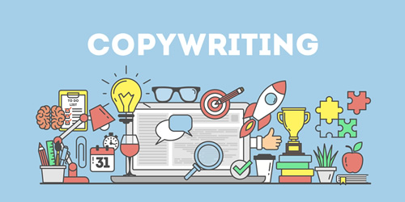
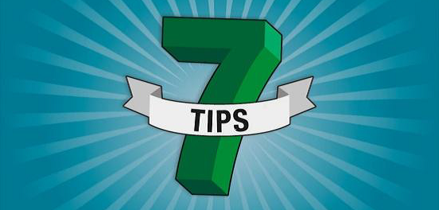

软文写作技巧汇总（7条）
如果你正在阅读这篇文章，那么你有可能正在尝试通过互联网销售产品。无论你从事 2B 业务还是 2C 业务，你始终都需要获取更多潜在客户，那么杀手级的营销软文就是不可或缺的。
但是现实是残酷的，你往往觉得提高转化率非常困难，而且你还没有足够的预算聘请高端写手。
虽然软文写作是一项来之不易的技能，需要长期磨炼，但是掌握一些营销技巧，你也能为自己的产品书写不错的软文。
下面列出了 7 个有助于提高软文转化率的写作技巧。
想象一下，你的大脑中有多少根深蒂固的观念，只是因为你小时候父母不停地念叨它们。这意味着什么？
这意味着你重复的次数越多，你的读者就越有可能相信你。
这不是说让你一味地复制粘贴以前的文案，这种重复是无效的，并且令人反感，你需要更加微妙和灵活一些。你可以从已有文案中提炼出一个容易记住的短语或者口号，然后尽可能频繁地重复使用它们。
你可以剽窃目标客户群体的语言文化，或者说话风格。
阅读你的文案，要让读者感觉宾至如归，感觉非常舒服，所以不能使用那些对读者来说司空见惯的商业语言。
你知道有一种感觉叫做“你读懂了我的心”吗？这样的语言才能引起读者的共鸣。要想知道客户喜欢使用哪些网络用语，唯一的办法就是调研。
你可以逛逛客户的朋友圈，查看相关的论坛/贴吧，关注客户阅读过的博客的留言部分，或者阅读客户买过的书籍的评论内容。记下客户喜欢使用的单词和短语，然后将它们融入到你现有的文案中。
不要浪费时间玩那些猜词游戏，市场调研才能告诉你客户想要什么，以及有哪些神奇的短语能够促进他们消费。
《影响力》这本书中特别强调了一项早在 1978 年（那个时候还没有互联网）就完成的社会心理学研究，这项研究表明：使用“因为”这个词来为自己辩解会起到很好的效果。
在实验中，排队等候的人们被以三种不同的方式问了同样的问题：
你认为哪种提问方式效果最差呢？第 3 种，对吧？
但是，我很遗憾地告诉你，你的想法是错误的！实验结果表明，第 2 种问法的效果才是最差的，它没有使用“因为”这个词，没有给出插队的理由。第一种问法被 94% 的人允许插队，第二种问法被 60% 的人允许插队，第三种问法被 93% 的人允许插队。
研究人员认为，这是人类的一种条件反射。不管你是否喜欢，你并不总是可以选择如何反应——即使你不想以某种方式做出反应，但是你仍然觉得必须这样做。
我们可以从中学到什么呢？
每当你为你的产品或者你自己提出要求时，或者要求你的用户必须采取行动时，请一定要使用“因为”这个词，给出一个恰当的理由。
有时候，不是你的页面深深吸引了读者，而是你把读者作为人质扣在你的页面上。我们当然不希望降低页面对读者的吸引力，但是请少一点暴力。
当你对读者提出要求时，请务必提醒他们，他们可以随时拒绝、离开、卸载或者取关。
给你的用户选择权，你会看到他们更愿意选择你。
例如，当你想让用户注册并免费试用你的软件时，你可以尝试这样表述：在下方输入你的电子邮箱，可以免费获取 100GB 的学习资料。如果你讨厌它，你可以随时退订，我们不会生气。
记住，你除了帮助你的公司创造业绩，你也是在推销你自己，这是一种一揽子交易。
缺陷是可怕的，承认自己的缺陷表明你并不适合所有人。但是正如那句老话所说，“一个伟大的品牌，有多少人喜欢它，就有多少人不喜欢它”，这是真的。
率先承认你的产品做不到的事情，和你的一小撮买家站在一起。你并不完美，无法取悦所有人。
你虽然犯了错误，但是你勇于展示这些错误，这将使你变得更加人性化，更加真实。不要害怕自己的某项资格被取消，也不要害怕拒绝不适合的用户。
例如，有这样一段文案：如果你正在寻找一位能够保证把软件冲到 APP Store 前五名的程序员，那么我不是你的菜；但是，我开发的软件肯定会让用户满意，并且有希望在 APP Store 中名列前茅。我不会做出兑现不了的承诺，这一点我保证。
这段话是不是和你很贴合，而且非常真实呢？
人类天生就能辨别谎言，即使两岁的孩子也知道你在撒谎，所以请说实话，不要说假话。做出你能兑现的承诺，展示自己的人情味。
我们都喜欢与人类做生意，因为我们不是机器。
这个问题和软文写作有什么关系？嗯，关系大了，听我慢慢解释。
你之所以沉迷电视剧或者沉迷小说，是因为作者恰到好处地设置了悬念。
在一章或者一集结束之前，一个新的故事线索总是被埋下，这些未知的结果吸引着我们去探索，吊足了我们的胃口。悬而未解的问题总是让人感觉不舒服。
那么，如何在你的软文中恰当地设置悬念，让读者上瘾呢？
很简单，提出一些你不会主动给出答案的问题（可以是问句或者陈述句）。为了得到答案，消除悬念，用户必须按照你的要求进行下一步操作。
例如，你正在为业绩不佳的企业销售发票软件，请不要简单地说“使用我们的软件开发票能省去不少麻烦”，而应该说“有哪些开票秘诀你不知道，而成功的企业家却在每天使用？”为了得到答案，你可以要求用户必须关注你的公众号。
那么，如何才能避免令人昏昏欲睡、低转化率的销售页面呢？你可以让读者想象你的产品/服务给他的生活带来的改变。
假如你有一款外包软件，它可以帮助创业者把一些小任务都外包出去，让创业者每天腾出一两个小时的额外时间。当你把软件推销给创业者时，你不应该大肆渲染开发团队的资历，或者软件的强大功能，你可以换一个角度，让他们思考使用软件后的生活会得到什么改变。
你可以像下面这样说：
以上只是一些例子，它们会引导读者思考使用你的产品后的生活和工作，这不比罗列一堆软件功能更有吸引力吗？
我敢打赌，使用以上 7 条技巧绝对会让你无聊的软文绽放潜能。
我有没有忘记分享其它的软文写作技巧呢？你有没有哪些津津乐道的写作技巧呢？请在文章下方留言分享。
但是现实是残酷的，你往往觉得提高转化率非常困难，而且你还没有足够的预算聘请高端写手。
虽然软文写作是一项来之不易的技能，需要长期磨炼，但是掌握一些营销技巧，你也能为自己的产品书写不错的软文。

下面列出了 7 个有助于提高软文转化率的写作技巧。
1. 重复、重复、再重复
不管你的产品到底是不是真的，人们听到的次数越多，就越有可能相信它是真的。想象一下，你的大脑中有多少根深蒂固的观念，只是因为你小时候父母不停地念叨它们。这意味着什么？
这意味着你重复的次数越多，你的读者就越有可能相信你。
这不是说让你一味地复制粘贴以前的文案，这种重复是无效的，并且令人反感，你需要更加微妙和灵活一些。你可以从已有文案中提炼出一个容易记住的短语或者口号，然后尽可能频繁地重复使用它们。
2. 剽窃（当然是道德的）
我不是说让你剽窃竞争对手的文案，这种行为是不被允许的，我说的是另一种符合道德的剽窃。你可以剽窃目标客户群体的语言文化，或者说话风格。
阅读你的文案，要让读者感觉宾至如归，感觉非常舒服，所以不能使用那些对读者来说司空见惯的商业语言。
你知道有一种感觉叫做“你读懂了我的心”吗？这样的语言才能引起读者的共鸣。要想知道客户喜欢使用哪些网络用语，唯一的办法就是调研。
你可以逛逛客户的朋友圈，查看相关的论坛/贴吧，关注客户阅读过的博客的留言部分，或者阅读客户买过的书籍的评论内容。记下客户喜欢使用的单词和短语，然后将它们融入到你现有的文案中。
不要浪费时间玩那些猜词游戏，市场调研才能告诉你客户想要什么，以及有哪些神奇的短语能够促进他们消费。
3. 为自己辩解
罗伯特·西奥迪尼（Robert Cialdini）写了一本关于说服力的好书，名字叫做《影响力》。如果你希望为你的读书清单添加一本书，我建议你考虑一下《影响力》。《影响力》这本书中特别强调了一项早在 1978 年（那个时候还没有互联网）就完成的社会心理学研究，这项研究表明：使用“因为”这个词来为自己辩解会起到很好的效果。
在实验中，排队等候的人们被以三种不同的方式问了同样的问题：
- 对不起，我有五页纸，我可以先使用打印机吗，因为我很着急？
- 对不起，我有五页纸，我可以先使用打印机吗？
- 对不起，我有五页纸，我可以先使用打印机吗，因为我必须打印它？
你认为哪种提问方式效果最差呢？第 3 种，对吧？
但是，我很遗憾地告诉你，你的想法是错误的！实验结果表明，第 2 种问法的效果才是最差的，它没有使用“因为”这个词，没有给出插队的理由。第一种问法被 94% 的人允许插队，第二种问法被 60% 的人允许插队，第三种问法被 93% 的人允许插队。
研究人员认为，这是人类的一种条件反射。不管你是否喜欢，你并不总是可以选择如何反应——即使你不想以某种方式做出反应，但是你仍然觉得必须这样做。
我们可以从中学到什么呢？
每当你为你的产品或者你自己提出要求时，或者要求你的用户必须采取行动时，请一定要使用“因为”这个词，给出一个恰当的理由。
4. 给用户选择权
读者不喜欢被扣为人质。有时候，不是你的页面深深吸引了读者，而是你把读者作为人质扣在你的页面上。我们当然不希望降低页面对读者的吸引力，但是请少一点暴力。
当你对读者提出要求时，请务必提醒他们，他们可以随时拒绝、离开、卸载或者取关。
给你的用户选择权，你会看到他们更愿意选择你。
例如，当你想让用户注册并免费试用你的软件时，你可以尝试这样表述：在下方输入你的电子邮箱，可以免费获取 100GB 的学习资料。如果你讨厌它，你可以随时退订，我们不会生气。
5. 敢于展示缺陷
人们想知道你真实的一面，尤其是你销售产品或者服务时。记住，你除了帮助你的公司创造业绩，你也是在推销你自己，这是一种一揽子交易。
缺陷是可怕的，承认自己的缺陷表明你并不适合所有人。但是正如那句老话所说，“一个伟大的品牌，有多少人喜欢它，就有多少人不喜欢它”，这是真的。
率先承认你的产品做不到的事情，和你的一小撮买家站在一起。你并不完美，无法取悦所有人。
你虽然犯了错误，但是你勇于展示这些错误，这将使你变得更加人性化，更加真实。不要害怕自己的某项资格被取消，也不要害怕拒绝不适合的用户。
例如，有这样一段文案：如果你正在寻找一位能够保证把软件冲到 APP Store 前五名的程序员，那么我不是你的菜；但是，我开发的软件肯定会让用户满意，并且有希望在 APP Store 中名列前茅。我不会做出兑现不了的承诺，这一点我保证。
这段话是不是和你很贴合，而且非常真实呢？
人类天生就能辨别谎言，即使两岁的孩子也知道你在撒谎，所以请说实话，不要说假话。做出你能兑现的承诺，展示自己的人情味。
我们都喜欢与人类做生意，因为我们不是机器。
6. 设置悬念
为什么电视连续剧让人如此上瘾？为什么你放不下手中的小说？都已经凌晨两点了，而且明天早晨要上班，你怎么还不放下手机去睡觉呢？这个问题和软文写作有什么关系？嗯，关系大了，听我慢慢解释。
你之所以沉迷电视剧或者沉迷小说，是因为作者恰到好处地设置了悬念。
在一章或者一集结束之前，一个新的故事线索总是被埋下，这些未知的结果吸引着我们去探索，吊足了我们的胃口。悬而未解的问题总是让人感觉不舒服。
那么，如何在你的软文中恰当地设置悬念，让读者上瘾呢？
很简单，提出一些你不会主动给出答案的问题（可以是问句或者陈述句）。为了得到答案，消除悬念，用户必须按照你的要求进行下一步操作。
例如，你正在为业绩不佳的企业销售发票软件，请不要简单地说“使用我们的软件开发票能省去不少麻烦”，而应该说“有哪些开票秘诀你不知道，而成功的企业家却在每天使用？”为了得到答案，你可以要求用户必须关注你的公众号。
7. 激发读者的想象力
激发读者的想象力，会让他和你站在一起思考，成为你强大的盟友。可悲的是，大多数网站的软文都很无聊，读者需要痛饮一杯咖啡来防止自己昏昏欲睡。你的网站不应该重蹈这种覆辙。那么，如何才能避免令人昏昏欲睡、低转化率的销售页面呢？你可以让读者想象你的产品/服务给他的生活带来的改变。
假如你有一款外包软件，它可以帮助创业者把一些小任务都外包出去，让创业者每天腾出一两个小时的额外时间。当你把软件推销给创业者时，你不应该大肆渲染开发团队的资历，或者软件的强大功能，你可以换一个角度，让他们思考使用软件后的生活会得到什么改变。
你可以像下面这样说：
- 每天多腾出两个小时的空闲时间，你会做什么？
- 如果你的一天有 26 个小时，你的生活会是什么样子？
- 想象一下，每天多花两个小时专注于工作，你的企业会是什么样子的？
- 想象一下，你再也不会感受到时间的压力了，一次也不会了。
以上只是一些例子，它们会引导读者思考使用你的产品后的生活和工作，这不比罗列一堆软件功能更有吸引力吗？

我敢打赌，使用以上 7 条技巧绝对会让你无聊的软文绽放潜能。
我有没有忘记分享其它的软文写作技巧呢？你有没有哪些津津乐道的写作技巧呢？请在文章下方留言分享。
关注公众号「站长严长生」，在手机上阅读所有教程，随时随地都能学习。内含一款搜索神器，免费下载全网书籍和视频。

微信扫码关注公众号